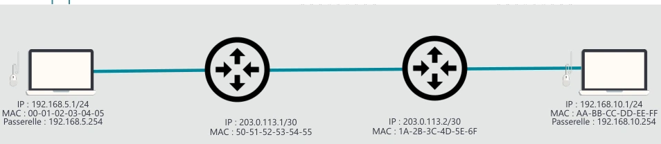
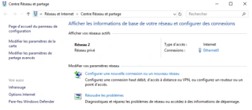
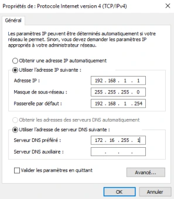
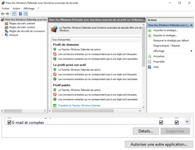

Transcription structurée du document source. Les compléments pédagogiques sont présentés dans l’onglet Cours Optimisé IA.
Systèmes clients Microsoft
Module 07 – La gestion du réseau et du pare-feu
Objectifs
Rappel sur les bases des réseaux
Configurer la carte et l’emplacement réseau
Manipuler le pare-feu Windows
Rappel : deux postes et deux routeurs
Équipement visible
Adresse IP
Adresse MAC
Passerelle
Poste A
192.168.5.1/24
00-01-02-03-04-05
192.168.5.254
Routeur 1, liaison interrouteurs
203.0.113.1/30
50-51-52-53-54-55
Routeur 2, liaison interrouteurs
203.0.113.2/30
1A-2B-3C-4D-5E-6F
Poste B
192.168.10.1/24
AA-BB-CC-DD-EE-FF
192.168.10.254
Configuration de la carte réseau
Le centre réseau et partage
Accessible depuis l'icône réseau de la barre de notification
Paramètre réseau et Internet > Centre réseau et partage
Accessible depuis le panneau de configuration
Réseau et Internet > Centre réseau et partage
Donne des indications sur :
La connectivité du poste
Les connexions réseau détectées
Les profils réseau et les emplacements associés
Donne accès aux paramétrages :
Des fonctionnalités de partage : découverte, partages, dossiers publics…
Des cartes réseau (accès direct en lançant ncpa.cpl)
Des nouvelles connexions

Illustration isolée du support — Module 07 - Support de cours

Illustration isolée du support — Module 07 - Support de cours
Configuration de la carte réseau
Une carte réseau est associée à un emplacement réseau
Détermine le comportement du pare-feu
Réseau privé sur un poste autonome
Réseau avec domaine non modifiable si le poste est joint à un domaine
Réseau public si aucune passerelle n’a été définie, si le domaine n’a pas été détecté pour les postes en domaine, si vous refusez de rendre votre ordinateur visible sur le réseau…
Configuration de la carte réseau
Quels paramètres pour le poste de travail ?
Adresse IP et masque
Passerelle
Serveurs DNS préférés et auxiliaires
Le type d’adressage
Statique : configuré manuellement
Dynamique : fourni par le serveur DHCP ou APIPA
APIPA : communication temporaire sur le réseau local
Obtenir automatiquement une adresse grâce au système d'exploitation Windows si aucun serveur DHCP n'est joignable
Réseau 169.254.0.0/16
Communication sur le réseau local possible

Illustration isolée du support — Module 07 - Support de cours
Configuration de la carte réseau
Outils graphiques
Zone de notification (état de la connexion)
Composant Connexions réseau
Assistant Résoudre les problèmes : orienté utilisateur…
Rappel sur les outils invite de commande : les plus précis et efficaces
ipconfig : afficher la configuration et interagir avec la pile réseau (DNS, DHCP)
ping : tester la connectivité (bloqué par défaut par le pare-feu Windows !)
tracert : tester la route empruntée par les paquets TPC/IP
nslookup : diagnostic de la résolution de noms d’hôte
Pare-feu
Pourquoi ?
Délimiter quels flux réseau sont autorisés en entrée et en sortie
Protéger le poste contre les accès non autorisés (utilisateurs, programmes)
Élément de la stratégie globale de sécurité de l’entreprise
Caractéristiques
Activé par défaut, bloque certains flux en entrée et les autorise tous en sortie
Se compose de règles prédéfinies activées (ou facilement activables)
S'adapte à la situation du poste (emplacements réseau)
Administrable de manière centralisée (stratégies, export)
Pare-feu
3 niveaux de configuration
Utilisateur depuis le composant Vérifier l'état du Pare-feu pour l’activation / la désactivation
Programme avec la fonction Autoriser une application via le pare-feu Windows : fournit un ensemble de règles génériques activées automatiquement et paramétrables
Avancé avec la console Pare-feu Windows Defender avec fonctions avancées de sécurité : donne accès au paramétrage détaillé de l’ensemble des règles, permet également d’afficher une vue globale des règles activées
Accessible avec la commande firewall.cpl
Démonstration

Illustration isolée du support — Module 07 - Support de cours
TP
Conclusion
Tout poste client doit communiquer sur les différents réseaux de l’entreprise
Tester la communication et diagnostiquer lorsqu’il y a dysfonctionnement